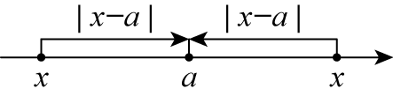
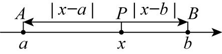
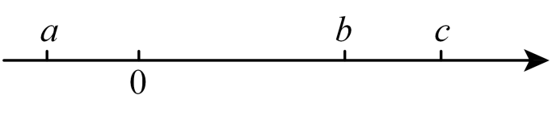

专题08 与绝对值有关的十大题型（举一反三专项训练）
【北师大版2024】

【题型1 代数视角看绝对值的意义】 1
【题型2 几何视角看绝对值的意义】 3
【题型3 绝对值的非负性】 3
【题型4 多绝对值处理——数形结合】 3
【题型5 多绝对值处理——分类讨论】 5
【题型6 多绝对值处理——零点分段】 5
【题型7 多绝对值之和的最小值】 5
【题型8 多绝对值之差的最大值】 5
【题型9 绝对值和差的最值】 6
【题型10 利用隐最值求最值】 6

知识点1 代数视角看绝对值的意义
绝对值的代数意义：a=a(a>0)，0(a=0)，−a(a<0)． （去绝对值法则） | 非负=本身； 非正=相反数． | 变式结论： ①若a=a，则(a≥0)； ②若a=－a，则(a≤0)； ③a≥a. |
知识点2 几何视角看绝对值的意义
绝对值⇔距离，数⇔形
a的几何意义：数轴上表示a的点到原点的距离． |  x－a的几何意义：数轴上表示x的点与表示a的点之间的距离． |

知识点3 绝对值的非负性
1. a≥0，绝对值无负数 | 2. 若a+b=0，则a=0且b=0 | 3. 若a+b2=0，则a=0且b=0 |
知识点4 多绝对值处理——数形结合
 | PA=x−a，x−a表示P，A两点之间的距离； PB=x−b，x−b表示P，B两点之间的距离； PA+PB=x−a+x−b， x−a+x−b表示P到A，B两点的距离之和． |
知识点5 多绝对值处理——分类讨论
aa或aa a>0⇒值为1； a<0⇒值为－1． | aa+bb=±2或0． ①a，b同正，值为1+1=2； ②a，b同负，值为−1−1=−2； ③a，b异号，值为1−1=0． 注：无需讨论具体数的符号． |
知识点6 多绝对值处理——零点分段
零点：使绝对值为0的未知数的值即为零点． 方法： ①寻找所有零点，并在数轴上表示； ②依据零点将数轴进行分段； ③分别根据每段未知数的范围去绝对． 易错点：分类不明确，不会去绝对值， | 化简：x−a+x−b(a<b)． 令x−a=0，x−b=0，解得x=a，x=b， 故零点为a，b，分三种情况讨论： ①x<a； ②a≤x≤b； ③x>b． |
知识点7 多绝对值型最值
1. 若a<b，则当a≤x≤b时，x−a+x−b有最小值b−a．
2. 若a<b<c，则当x=b时，x−a+x−b+x−c有最小值c−a．
3. n个绝对值之和求最小值
一般地，设a1<a2<a3<⋯an，P=x−a1+x−a2+x−a3+⋯+x−an．
①若n为奇数，则当x=an+12时，P有最小值；②若n为偶数，则当an2≤x≤an2+1时，P有最小值．
口诀：按序排列，奇取中值，偶取中段．
4. 系数不为1型绝对值之和求最小值，可化为系数为1型问题解决．
5. 若a<b，则当x≥b时，x−a−x−b的最大值为b−a．
6. 绝对值和差混搭求最大值：数形结合，分析表示数x的点的位置．
7. 注意挖掘几个绝对值之和有最小值，及取得最小值时字母的范围这个隐藏的条件．
【题型1 代数视角看绝对值的意义】
【例1】（24-25七年级下·陕西榆林·开学考试）已知有理数a，b，c在数轴上的位置如图所示，化简式子a−b−c−a+b−c的值为 ．

【变式1-1】（2025七年级上·全国·专题练习）已知1<x<2，则x−3+x−2的值为 ．
【变式1-2】（23-24七年级上·辽宁大连·阶段练习）若|a−1|=1−a，则a的取值范围是 ．
【变式1-3】（24-25七年级上·江苏盐城·期中）若a2=9，b=7，且a−b=b−a，则2a−b的值为 ．
【题型2 几何视角看绝对值的意义】
【例2】已知m+12=3m−8，求m的值．
【变式2-1】数轴上点A表示的数为−4，点B表示的数为x，若A，B两点之间的距离为11，求x的值．
【变式2-2】已知m−2=10，求m+1的值．
【变式2-3】若t+4+t−1+t−8=12，请结合数轴确定t的取值．
【题型3 绝对值的非负性】
【例3】已知x−2+x+y−5+y−1=y−1，求y的值．
【变式3-1】（2025九年级下·西藏·专题练习）若a+12+b−2024=0，则ab的值为 ．
【变式3-2】（24-25七年级上·内蒙古巴彦淖尔·期中）若x−2与y+6互为相反数，则2x−y的值为
【变式3-3】已知a−2+b−5+c−4=c−4，求a+b的值．
【题型4 多绝对值处理——数形结合】
【例4】（24-25七年级上·福建泉州·期中）阅读下面材料：
在数轴上点A、B分别表示数a，b，则A、B两点之间的距离AB=a−b，例如，当a=5,b=−2，AB=5−−2=7．

回答下列问题：
(1)①在数轴上表示−2与−6两点间的距离是 ，
②在数轴上表示x与4两点间的距离是 ；
③在数轴上表示x与________两点之间的距离为x+2．
(2)下面对式子x+2+x−4进行探究：
①当表示数x的点在−2与4之间移动时，x+2+x−4的值总是一个固定的值为：___________．
②要使x+2+x−4=8，数轴上表示的数x=___________________．
(3)求x+2+x+1+x−2+x−4的最小值．
【变式4-1】如图，数轴上4个点表示的数分别为a、b、c、d．若|a﹣d|＝10，|a﹣b|＝6，|b﹣d|＝2|b﹣c|，则|c﹣d|＝（ ）

A．1 B．1.5 C．2.5 D．2
【变式4-2】如图A，B，C，D，E分别是数轴上五个连续整数所对应的点，其中有一点是原点，数a对应的点在B与C之间，数b对应的点在D与E之间，若|a|+|b|=3则原点可能是 ．

【变式4-3】点A、B在数轴上分别表示有理数a、b，A、B两点之间的距离表示为AB，则在数轴上A、B两点之间的距离AB=a−b．
所以式子x−2的几何意义是数轴上表示x的点与表示2的点之间的距离．借助于数轴回答下列问题：
①数轴上表示2和5两点之间的距离是 ，数轴上表示1和−3的两点之间的距离是 ．
②数轴上表示x和−2的两点之间的距离表示为 ．
③数轴上表示x的点到表示1的点的距离与它到表示−3的点的距离之和可表示为：x−1+x+3．则x−1+x+3的最小值是 ．
④若x−3+x+1=8，则x=
【题型5 多绝对值处理——分类讨论】
【例5】已知a,b,c为有理数．
（1）若a≤0，则|a|=__________；若b>0，则|b|=________．
（2）已知abc≠0，a<0，bc>0，求a|a|+ab|ab|+ac|ac|+bc|bc|的值．
（3）已知abc≠0，且a+b+c=0，求a|a|+b|b|+c|c|+ab|ab|+bc|bc|+ac|ac|+abc|abc|的值．
【变式5-1】已知x，y均为整数，且|x﹣y|+|x﹣3|＝1，则x+y的值为 ．
【变式5-2】（24-25七年级上·四川德阳·阶段练习）如果a，b，c为非零有理数且a+b+c=0，那么aa+bb+cc+abcabc的值为 ．
【变式5-3】（23-24八年级上·浙江宁波·期末）若关于x的方程x−2−1=a有三个整数解，则a的值是( )
A．0 B．1 C．2 D．3
【题型6 多绝对值处理——零点分段】
【例6】无论x取何值，x−2+x−5≥a都成立，则a的取值范围是 ．
【变式6-1】已知x+4+x−2=10，求x的值．
【变式6-2】已知x≤2，求x−3−x+2的最大值和最小值．
【变式6-3】若x−12=2x+1+4，求x的值．
【题型7 多绝对值之和的最小值】
【例7】（23-24七年级上·四川成都·期中）设a=x−3，b=x−1，c=x+12，则3a+b+c的最小值是 ．
【变式7-1】（23-24七年级上·浙江嘉兴·阶段练习）式子|x+100|+|x−2|+|x−5|的最小值是 ．
【变式7-2】请解答下列问题：
①当代数式x+1+x−1取最小值时，x的取值范围是 ，最小值为 ．
②求x−1+x−2+x−3+⋯+x−24的最小值为 ．
【变式7-3】（24-25七年级上·湖北武汉·期中）设有理数a，b，c，满足a<0，c>0，且a<b<c，则23x+a+23x−b+x+c的最小值为 ．
【题型8 多绝对值之差的最大值】
【例8】（22-23七年级上·四川成都·期中）若x+1+x−1的最小值记为n，−x−1−x−1的最大值记为m，则−nm= ．
【变式8-1】（24-25七年级上·安徽六安·期中）若点A、B在数轴上分别表示有理数a、b，则A、B两点之间的距离表示为AB=|a−b|
（1）若|x−3|=2，这样的数x为 ；
（2）结合数轴探究：存在x的值，使式子|x+1|−|x−5|有最大值，这个最大值是 ．
【变式8-2】（22-23七年级上·浙江宁波·期中）x−2−x−5的最大值为 ．
【变式8-3】（24-25七年级上·江苏无锡·阶段练习）当式子x−3−x+5取得最大值时，x的最大整数值是 ．
【题型9 绝对值和差的最值】
【例9】（22-23七年级上·浙江温州·阶段练习）式子x−1+2x−2+3x−3+2x−4+x−5的最小值是 ．
【变式9-1】求x−1−x−2+x−3−x−4的最大值,并写出此时x的取值范围
【变式9-2】（22-23九年级下·福建南平·自主招生）已知−12≤x≤32；，则2x+1−x−1+3x−x−2的最大值为 ．
【变式9-3】（24-25七年级上·北京·期中）1．已知，有理数a、b、c在数轴上的位置如图所示，
（1）化简：3a+b−c−2a+c+2b= ；
（2）若a,c两数的倒数是他们自身，当x的范围是 时，x−a+x−c有最小值，最小值为 ．
（3）在（2）的条件下，若未知数x、y满足x−a+x−3y−2+y−c=6，则x+2y的最大值是 ．
【题型10 利用隐最值求最值】
【例10】（24-25七年级上·陕西西安·阶段练习）若：|a−2|+|a+3|+|b−1|+|b+2|=8，则a+b的最小值是
【变式10-1】（23-24七年级上·浙江绍兴·阶段练习）已知a、b为整数，a+2023−b−2=0，且b<a，则a的最小值为 ．
【变式10-2】我们知道，|x|表示x在数轴上对应的点到原点的距离，我们可以把看作|x-0|，所以，|x- 3|就表示x在数轴上对应的点到3的距离，|x1||x-（-1）|就表示x在数轴上对应的点到-1的距离，由上面绝对值的几意义，解答下列问题：
(1) 当|x-4||x2|有最小值时，x的取值情况是 ；
(2) |x-3||x2 ||x6|的最小值是 ；
(3) 已知| x -1||x2 ||y-3||y4|10 求2xy 的最大值和最小值.
【变式10-3】（23-24九年级下·浙江温州·自主招生）已知|x+2|+|x−1|=8−|y−4|−|y+1|，则2x−3y的最小值为 ．